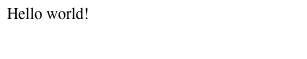
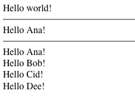

Hello World с JavaScript¶
Hello World¶
Выполните следующие действия, чтобы создать простой шаблон Hello World и использовать его в JavaScript:
Создайте рабочий каталог, например:
mkdir ~/helloworld_js/Создайте в этом каталоге файл simple.tmpl и скопируйте туда следующую строку:
{namespace examples.simple}Эта строка объявляет пространство имён для всех шаблонов, которые будут размещены в данном файле.
Скопируйте следующий простой шаблон и поместите его в после объявления пространства имён:
{template helloWorld}
Hello world!
{/template}Этот шаблон просто создаёт строку "Hello world!".
Запустите вашу реализацию Common Lisp (cl-closure-template разрабатывается в основном с использование SBCL, но должна работать и с другими реализациями) и выполните следующий код (не забудьте поправить указанные пути):
(ql:quickload "closure-template")
(alexandria:write-string-into-file
(closure-template:compile-js-templates #P"/home/youname/helloworld_js/simple.tmpl")
#P"/home/youname/helloworld_js/simple.js")В этом же каталоге создайте файл helloworld.html и скопируйте в него следующий HTML-код:
<html>
<head>
<title>The Hello World of Closure Templates</title>
<script type="text/javascript" src="simple.js"></script>
</head>
<body>
<script type="text/javascript">
// Exercise the helloWorld template
document.write(examples.simple.helloWorld());
</script>
</body>
</html>Откройте файл helloworld.html в вашем браузере, например:
firefox ~/helloworld_js/helloworld.htmlпосмотрите результат. Страница должна выглядеть как показано на скриншоте:

Вот и всё! Вы только что создали с помощью cl-closure-template самый простой шаблон и использовали его в JavaScript. В следующем разделе мы немного усложним данный пример, добавив два новых простых шаблона в simple.tmpl.
Hello Name and Hello Names¶
Добавьте в simple.tmpl второй шаблон, называемый helloName. Данный шаблон требует параметр name, а также имеет опциональный параметр greetingWord. Этот шаблон также демонстрирует использование команды if-else. Вы можете расположить этот шаблон до или после helloName, но в любом случае после определения пространства имён.
{template helloName}
{if not $greetingWord}
Hello {$name}!
{else}
{$greetingWord} {$name}!
{/if}
{/template}Добавьте в simple.tmpl третий шаблон helloNames, который демонстрирует использование цикла foreach с командой ifempty. Он также демонстрирует как вызывать другие шаблоны и вставлять их вывод с помощью команды call. Примечание: атрибут data="all" в команде call указывает передать в вызываемый шаблон все параметры, которые были переданы вызывающему шаблону.
{template helloNames}
// Greet the person.
{call helloName data="all" /}<br>
// Greet the additional people.
{foreach $additionalName in $additionalNames}
{call helloName}
{param name: $additionalName /}
{/call}
{if not isLast($additionalName)}
<br> // break after every line except the last
{/if}
{ifempty}
No additional people to greet.
{/foreach}
{/template}
Перекомилируйте файл с шаблонами:
(alexandria:write-string-into-file
(closure-template:compile-js-templates #P"/home/andrey/helloworld_js/simple.tmpl")
#P"/home/andrey/helloworld_js/simple.js"
:if-exists :supersede)Измените файл helloworld.html, добавив вызовы шаблонов helloName и helloNames:
<html>
<head>
<title>The Hello World of Closure Templates</title>
<script type="text/javascript" src="simple.js"></script>
</head>
<body>
<script type="text/javascript">
// Exercise the helloWorld template
document.write(examples.simple.helloWorld());
// Exercise the helloName template
document.write('<hr>' + examples.simple.helloName({name: 'Ana'}));
// Exercise the helloNames template
document.write('<hr>' + examples.simple.helloNames(
{name: 'Ana', additionalNames: ['Bob', 'Cid', 'Dee']}));
</script>
</body>
</html>Перезагрузите страницу helloworld.html в браузере и посмотрите результата. Страница должны выглядеть как на скриншоте:

Вы только что завершили создание трёх простых шаблонов и использовали их в JavaScript.